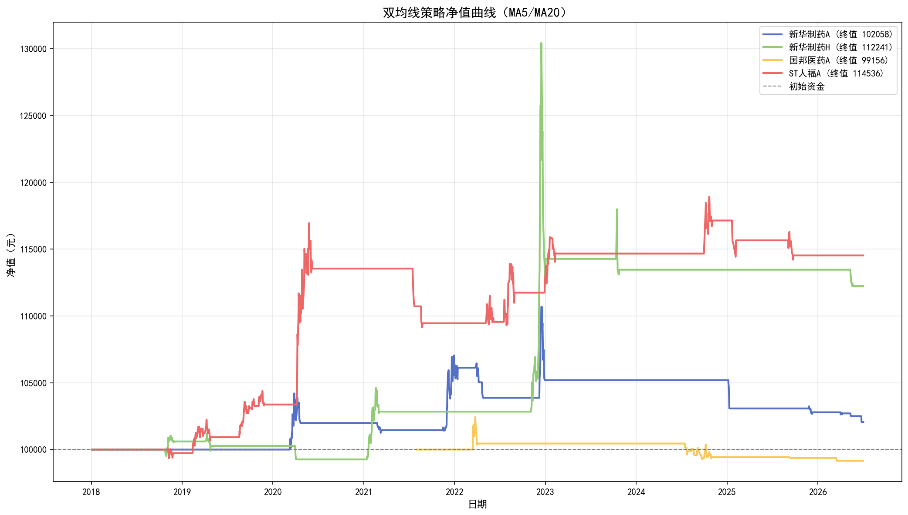
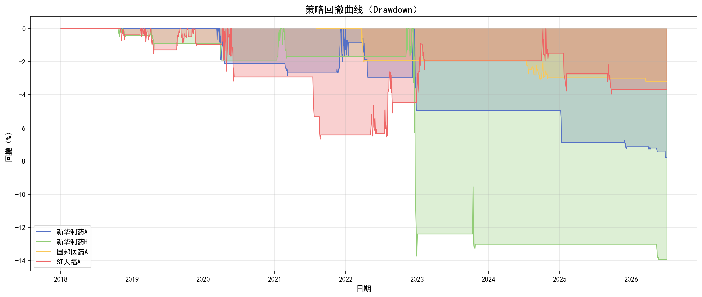
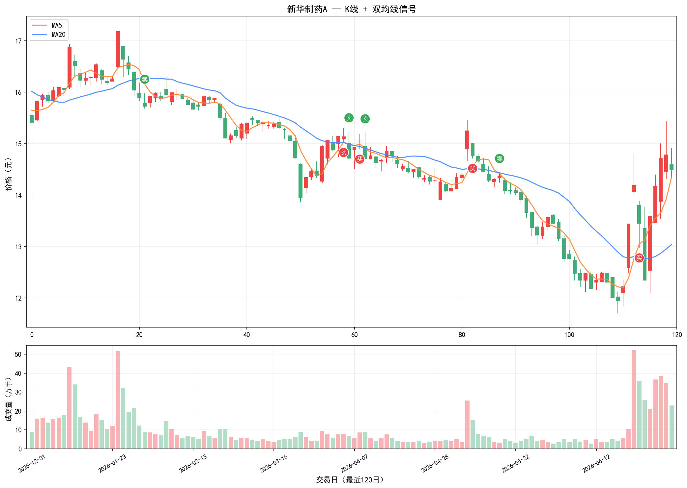
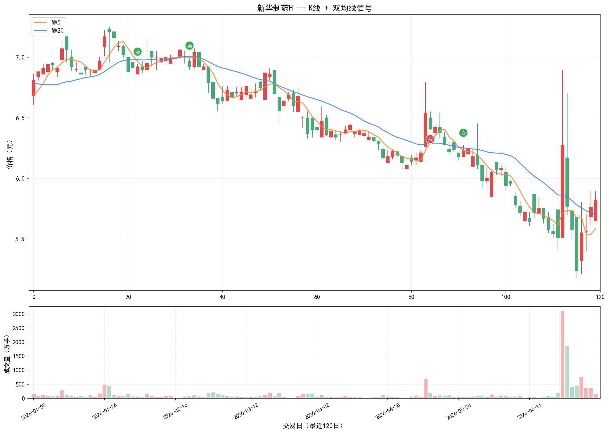
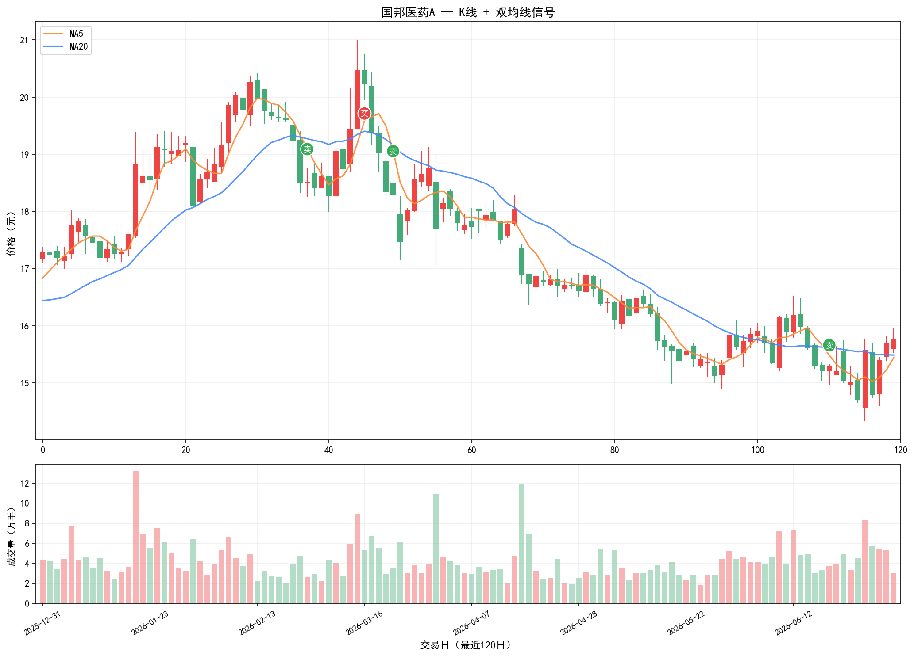
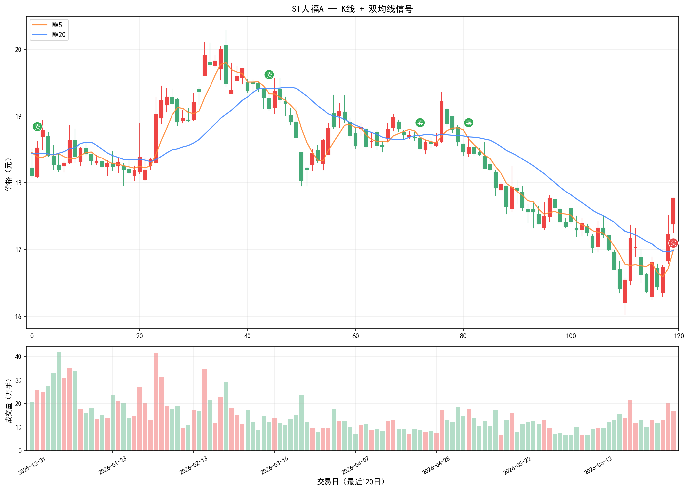

MA5 / MA20 趋势跟踪 · 成交量+ATR过滤 · 固定10%止损
回测区间：上市日 — 2026-07-05 | 数据：前复权日线
| 指标 | 新华制药A | 新华制药H | 国邦医药A | ST人福A |
|---|---|---|---|---|
| 累计收益 | 2.06% | 12.24% | -0.84% | 14.54% |
| 年化收益 | 0.17% | 0.94% | -0.12% | 1.11% |
| 最大回撤 | -7.80% | -13.96% | -3.20% | -6.68% |
| 夏普比率 | 0.110 | 0.278 | -0.129 | 0.441 |
| 胜率 | 25.00% | 42.86% | 28.57% | 53.33% |
| 盈亏比 | 4.04 | 6.16 | 1.00 | 2.61 |
| 交易次数 | 12 | 7 | 7 | 15 |
| 买入持有 | 53.90% | -29.05% | -48.92% | 6.32% |





